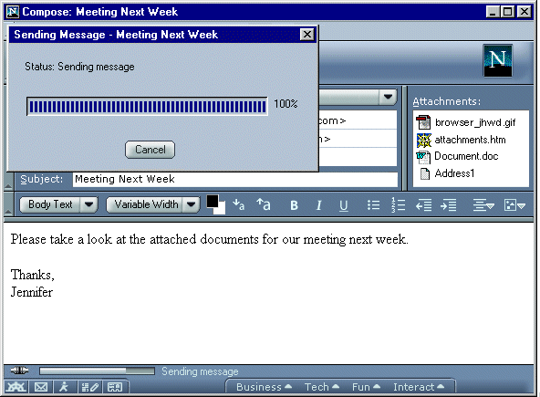

| CodeName/Mozilla: Mail: Compose |
Issues Meeting Notes
|
| Mail Compose: Sending Feedback |
Last Modification:
|
Author: Jennifer Glick
Creation Date: 1-9-01 |
Issues Meeting Notes for January 9, 2001
|
Please see the Proposal
document for background information.
Options 1 and 3 were the most popular. After discussing the pros and
cons of each, and looking at other mail applications, the majority of folks at the meeting
agreed upon the first proposal, to implement mail
compose send feedback the same as 4.x.
Results - Implement the same (or similar) to 4.x Windows
- The Mail Compose window remains open until the message is really sent.
- Status of the message send operation appears in the Mail Compose window
status bar (visual and text).
- The title of the window will be "Sending Message - <Subject of
Message>". If this doesn't work well, the Subject will appear on the
progress window instead ("Subject: <subject>").
- A Progress dialog appears on top of the Mail Compose window, in the upper
left corner, indicating the
status of the send operation (visual and text).
- A Cancel button appears on the progress dialog. If a message is
taking a long time to send, the send operation can be canceled. If a send
operation is canceled, focus is returned to the Mail Compose window.
- No "Stop" button on Mail Compose window.
- If the send operation fails, the progress window is replaced with an error
dialog informing the user of the problem and asking them if they would like
to retry the send or return to the compose message. For example,
"The message could not be sent because the connection to the server
<name> has disconnected. You can retry sending the message, or select
the Cancel button to return to the Compose window." If time
permits, we could also allow the user to save a copy of the message to the
Drafts folder from this dialog.
